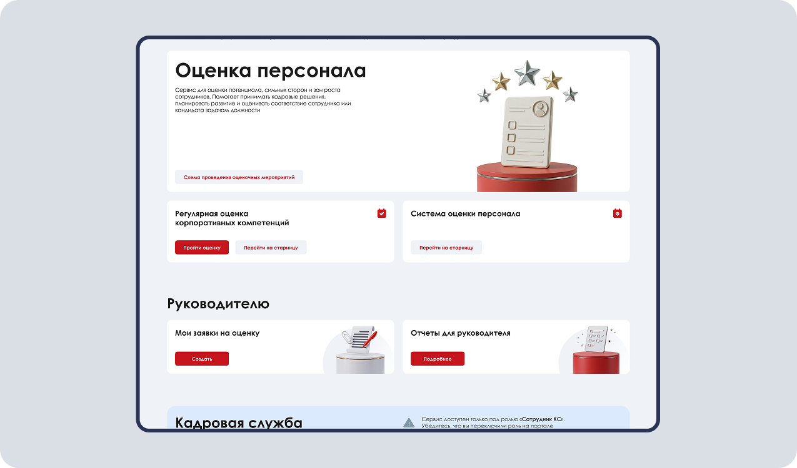
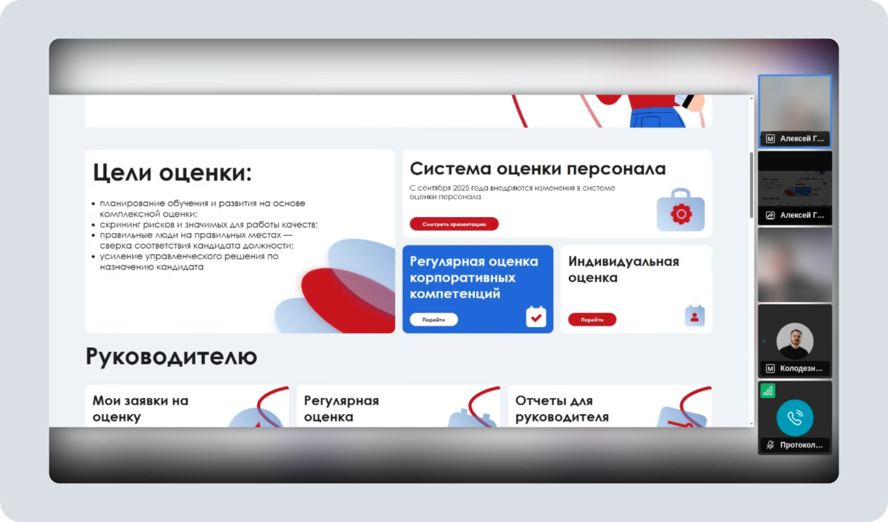
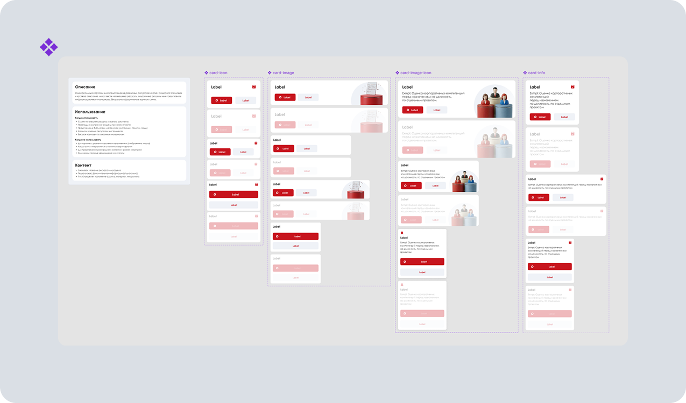
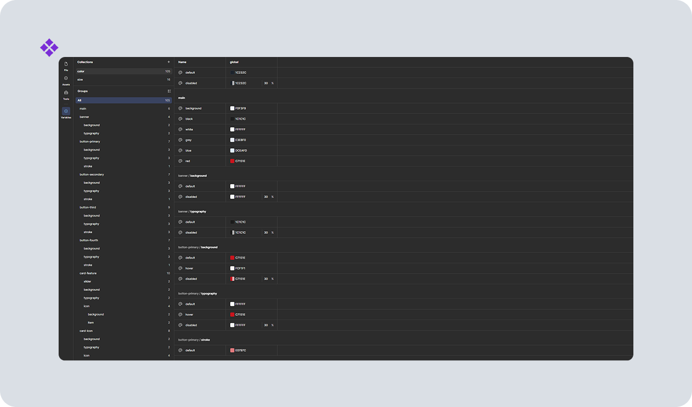
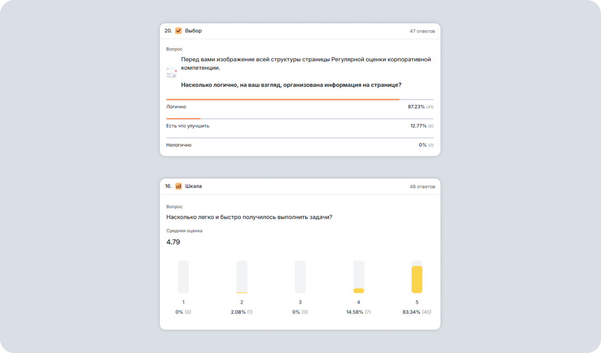

Редизайн корпоративной HR-платформы Правительства Москвы
Ситуация
Корпоративная HR-платформа в закрытом контуре Правительства Москвы нуждалась в обновлении. Требовалось сохранить существующие функции и содержание, убрать избыточную информацию и сделать ключевые сценарии удобнее для сотрудников и руководителей подразделений. Годовой проект был разделён на квартальные этапы.

Задача
Моя задача состояла в том, чтобы исследовать потребности пользователей, переосмыслить структуру типовых страниц, обновить дизайн-систему и подготовить адаптивные решения для поэтапной передачи в разработку.
Процесс
Совместно с арт-директором я подготовил сценарий глубинного интервью для сотрудников и руководителей подразделений. Мы сформировали список вопросов, провели и записали интервью, расшифровали материалы и с помощью ИИ структурировали результаты. Я проанализировал общие паттерны и ключевые проблемы респондентов, сформулировал JTBD и пользовательские сценарии, а затем представил схематичную концепцию новых страниц с учётом существующего контента.

После согласования UX-концепции я обновил дизайн-систему: создал новые UI-компоненты и адаптировал существующие элементы, которые можно было переиспользовать. На их основе собрал прототип универсальной страницы для подразделений и разделов платформы, чтобы унифицировать интерфейс внутри комплекса.


Для проверки решения команда провела A/B-тестирование старого и нового вариантов на 50 респондентах. После утверждения формата я подготовил адаптивы, включая мобильную версию, согласовал страницы с их владельцами, передал макеты в разработку, контролировал вёрстку и проводил дизайн-ревью.
Результат работ
Новый формат страниц подтвердил эффективность на пользовательском тестировании:
- 94% участников выбрали обновлённую версию
- скорость выполнения задач выросла в 4–7 раз
- оценка удобства интерфейса выросла с 3,65 до 4,71 из 5
- логичность структуры положительно оценили 87% участников против 27% у предыдущей версии

Редизайн в процессе, поэтому итоговых метрик посещаемости и поведения пользователей после полного запуска пока нет.